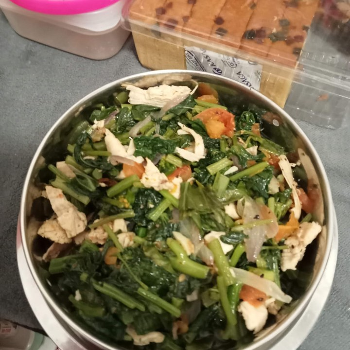

Filipino · 52 · Children, cooking & household
Ten years with one family, who recommended her in writing — two children taken from newborn, five years apart. Fifteen years in Singapore, Indian and Filipino cooking, and infants in three of her households.
“She looked after them from the time they were newborns and toddlers, and I always felt they were safe and well cared for with her. She managed their meals, nap times and daily routines with patience and care.”
— Pooja, her employer of ten years
Trust signals
Our strongest trust signal — a family she worked for, recommending her directly. The letter is from the household she was with until 2022, not the one she is in now. We arrange the call once a family has met her and is proceeding seriously.
At a glance
The essentials
Available from
18 January 2027. Transfer within Singapore.
Why she is available
The family she is with are getting a large dog, and she is not comfortable with one. Nothing to do with her work — she has been with them two years and two months.
Ten years, one household
November 2011 to January 2022 — an Indian family whose two children were born in 2011 and 2016. She had both from newborn, and ran the house besides.
Where she is now
Since November 2024 — an Indian couple with a child of thirteen, in a private flat: the cooking, the household and the child.
Children she has cared for
Newborns through to teenagers. Two children from birth across ten years, infants in two more households between 2023 and 2024, and a thirteen-year-old now.
Cooking
Indian and Filipino, after fourteen years in Indian households. Chinese and Western she has done less of, and says so.
Dogs
She is fine with a small dog in the house. A large one is not something she can take on, which is the reason she is moving.
Best fit
A family with children — a baby among them if needed — who want the house run without being asked twice. An Indian kitchen is the one she knows best.
From Pooja’s signed letter, covering the ten years Leny was with her family.
She begins with the children: “She helped care for both my children, who were born in 2011 and 2016. She looked after them from the time they were newborns and toddlers, and I always felt they were safe and well cared for with her. She managed their meals, nap times and daily routines with patience and care.”
On the house: “She was also very good at managing our home. She handled the general housekeeping, laundry and ironing very well, and kept everything clean and organised. She took initiative without needing to be told what to do and was always dependable. She was also warm and helpful when we had guests at home.”
On trust: “Most importantly, she was someone we could trust completely. There were many times when we travelled and left our home in her care. We always returned to find everything clean, tidy and well looked after.”
And at the end: “She was an important part of our family for many years, and I am grateful for the care and support she gave us. I would happily recommend her to any family looking for someone kind, responsible and trustworthy.”
Two years in Dubai, then Singapore since November 2011.
Before Singapore. Two years in Dubai.
November 2011 to January 2022 — ten years and two months. An Indian family of four. She joined before the first child was born and was still there when the second was five — both of them hers from newborn — with the housekeeping, the laundry and the ironing besides. One registration, start to finish. This is the household that wrote her reference.
2022. An unsettled year: three households between May and December, none of them lasting — three and a half months, eight days, and three months. She will talk any of them through with you.
January 2023 to May 2024 — sixteen months. A household of three in a four-room flat, registered for cooking, general household and the care of an infant.
May to November 2024. A household of four in a private flat, registered again for the care of an infant.
November 2024 to now. An Indian couple with a child of thirteen — the cooking, the general household and the child. Two years and two months so far. They are getting a large dog, which is why she is moving.
Where she’d suit next. A family with children at any age. She has taken two babies from newborn through to school and has a teenager in her care now, and fourteen of her fifteen Singapore years have been in Indian households, so the cooking comes with her. A small dog is fine; a large one is not.
Her employment record, her written reference and her full work history are available to interested families, with her consent.
Her own photographs, from the households she has cooked for.

Tell us a little about your household and we’ll be in touch within 1–2 business days. We’ll only move forward if it feels like a genuine fit.